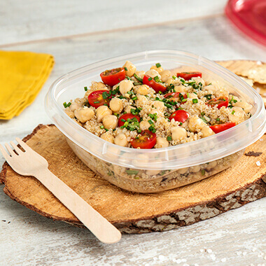

Bebidas de café frías para combatir el calor del verano
- Bebidas de café frías para combatir el calor del verano
- recetas de bebidas frias para primavera - Cocina Delirante
- 480 ideas de BEBIDAS CALIENTES en 2021 - Pinterest
- Bebidas frias - 7.706 recetas caseras- Cookpad
- Siete bebidas refrescantes para el verano y siete .
- 10 recetas de bebidas frías y calientes que están .
- Recetas de bebidas frías, y mucho más - Monin - Monin
- Recetas de Bebidas Frías - Kiwilimón
- Bebidas frías - Kraft Foods
¡Aprende a preparar Agua de frutas deslactosada con esta fácil y divertida! Cocina con Inspiración y descubre todos los tips saludables que NESTLÉ tiene . - Bebidas frias y calientes - Recetas La Serenísima
Saltar al contenido Menú BARATAS Guía de Compra ¿Licuadora o batidora? ¿Para qué sirve? Tipos De Prensado en Frío Fáciles de limpiar Lentas Manuales Pequeñas Portátiles Profesionales Marcas Aicok BioChef Bosch Braun Cecotec Jata Juissen Kenwood Moulinex Ninja Philips Princess Orbegozo Oster Russell Hobbs Silvercrest SMEG Taurus Ufesa Vitamix Las mejores Cecotec Extreme Titanium 19000 Cecojuicer Pro Moulinex Infiny Juice Moulinex Vitae Philips HR1832/00 Comparativas Alcampo Carrefour El Corte Inglés Hipercor Media Markt Worten Otros productos Báscula de cocina Cortador de Verduras Cortafiambres Creperas Envasadora al Vacío Extractor de Zumos Deshidratador de alimentos Gofreras Mandolinas Pelador de Piña Sous Vide Sacacorchos eléctrico Vaporeras Eléctricas Yogurteras Recetas
Recetas frías de café de verano: combate el calor con cafeína y hielo
El café es una bebida esencial para muchas personas. Les ayuda a despertar, activar su cerebro e incluso para concentrarse más. Es por ello que el verano es una época complicada para los amantes del café, ya que muchos no quieren tomarlo caliente.
En este post encontrarás varias recetas para disfrutar de unos deliciosos cafés helados. Quedar para tomar un café con amigos o familia puede acabar siendo el mejor momento del día.
Tip : para las recetas más frías de este post, te recomendamos una licuadora resistente, como por ejemplo las licuadoras Oster o bien una licuadora Ninja Blender , ya que muchos de sus modelos son muy aptos y recomendados para recetas con hielo.
Si te gusta el café, atrévete con nuevas recetas y tips para probarlo de diferentes maneras. Hay muchas cadenas de café que ofrecen ricos cafés helados, pero con leer este post podrás hacerlo tú mismo/a sin moverte de casa .
Contenido
1 Las mejores recetas de café helado frío para el verano 1.1 Café Mocca Helado 1.2 Licor de Café y Brandy 1.3 Café con leche con hielo 1.4 Café Helado 1.5 Capuchino frío 1.6 Café con helado de vainilla 1.7 Café frío con dulce de leche 1.8 Frappé Oreo 1.9 Café helado con leche condensada 1.10 Affogato 1.11 Coffee tonic 1.12 Café nitro / Nitro coffee 2 Más recetas de bebidas en tu licuadoraLas mejores recetas de café helado frío para el verano
Ya es verano. Es época de playa, manga corta y de bebidas refrescantes. Es por ello que presentamos una recopilación de estas interesantes y refrescantes recetas que tienen como ingrediente principal una de nuestras bebidas predilectas: el café.
Café Mocca Helado
Si queremos un café bien frío, debemos saber que hay vida más allá del café con hielo aunque sea una de las propuestas más rápidas y que más bien preservan la esencia del café.
Ingredientes
375 ml de café frío 500 ml de leche semidescremada 2 cucharadas de azúcar Chocolate caliente (3 cucharadas serán suficientes) Hielo en abundanciaUna vez disponemos de los ingredientes, el procedimiento es muy sencillo :
Sólo hay que ponerlos todos en la licuadora y dejarla trabajar hasta que la mezcla sea homogénea. Una vez servido en un vaso, se puede coronar la bebida con un poco de nata manchada con chocolate. En definitiva, una combinación deliciosa.Licor de Café y Brandy
La siguiente receta que proponemos es ideal para los sobremesas después de cenar que se alargan en las terrazas y jardines durante las noches de verano. Siempre que no tengas que dormir pronto, claro 🙂
Ingredientes
30 ml de café 30 ml de brandy HieloComo ya hemos visto en la receta anterior, el procedimiento es muy fácil. Sólo será necesario verter todo en la licuadora durante unos cinco minutos y servir la bebida bien fría. Se puede complementar con canela o almendra en polvo.
La licuadora que usemos puede ser prácticamente cualquiera, ya sea Philips , Taurus , Oster , Orbegozo o incluso San Ignacio .
Café con leche con hielo
Si bien es cierto que hemos dicho primeramente que dejaríamos de lado el café con hielo , nos vemos obligados a mostrar esta interesante variante . A menudo sucede que aquellos que les guste el café con un sabor más intenso, encuentran en el café con hielo un café quizás un poco aguado. Si es tu caso, ¡tenemos la solución! Sólo hay que preparar café, ponerlo en una cubitera y dejar reposar en el congelador.
Sed pacientes; tardará más que el agua a congelar , pero una vez lo haya hecho, tendrá listos cubitos de café que puede poner en un vaso con café, para hacer un café con hielo más sabroso, o con leche fresca para hacer un café con leche más fresco e intenso.
Así pues, para hacer café con leche con hielo RÁPIDO solo necesitas:
Un vaso o taza de leche Cubitos de hielo hechos con caféPreparación : echas los cubitos en la leche y voilà, ¡ya lo tienes!
Café Helado
Si todos tus sentidos se activan cada vez que pruebas un café frío tipo Starbucks , debes saber que ya puedes prepararlos desde tu casa. Esta receta fácil de cómo hacer café helado hará que pase a ser una de tus bebidas favoritas.
Ingredientes
100ml de café 50ml de leche (la que prefieras) 2 vasos de hielo AzúcarPreparación de café helado
Esta receta puede también llamarse café con leche helado debido al toque de leche que le añadimos. A estas alturas estarás deseando saber cómo hacer el café helado en casa . Vamos allá:
Prepara un café en la cafetera y añádele azúcar a tu gusto. Deja enfriar un poco. Vierte en la batidora el café, los 50ml de leche y el hielo para picar. Bátelo todo y disfrútalo bien frío.Variantes
Esta receta, como la mayoría, tiene diferentes variantes para que consigas disfrutar de la bebida al máximo. Una vez servido puedes añadirle, por ejemplo, nata montada .
Además, si quieres saber cómo preparar este café en la Thermomix tengo buenas noticias porque es muy sencillo . Vierte todos los ingredientes en el vaso (el café soluble) y en 3 minutos a velocidad 4 podrás tener tu café helado.
¿Es lo mismo café helado que café frappé?
Seguro que habrás oído hablar del café frappé, una de las especialidades de Starbucks y que a muchos vuelve locos. Pero, ¿sabes en qué se diferencian los conceptos de café helado y café frappé?
El término frappé proviene del francés, “agitado ”, y es una bebida muy usual en épocas veraniegas y en países europeos bañados por el Mediterráneo. La principal diferencia con el café helado es su cremosidad, contando con una parte bastante espumosa .
En los cafés frappé también es común disfrutar de unas virutas de chocolate por encima de la espuma, sirope o cualquier alimento decorativo. Da un toque especial de sabor y color a esta receta.
Capuchino frío
Ay, la bella Italia … Nos ha dado recetas de cocina deliciosas, ciudades indescriptibles llenas de historia y belleza, un idioma maravilloso y, cómo no, el capuchino. Esa manera de servir y disfrutar el café que ha conquistado medio mundo.
Se ha ido convirtiendo en una de las bebidas con café por excelencia. Aquí te dejo la receta de este café frío para que lo puedas hacer en casa cuando más te apetezca.
Ingredientes
1 taza de café 50ml de leche Cacao en polvo o canela 1 taza de hielosPreparación de este café de verano
Prepara un café solo y añádele azúcar a tu gusto. Vierte la leche en tu licuadora y bátela hasta que consigas que salga espumosa Una vez apartada la leche, pica los hielos en tu licuadora En una taza, vierte el café y la leche líquida A continuación, agrega el hielo picado y finalmente la espuma de la leche Espolvorea cacao en polvo o canela molida para darle un toque de sabor muy rico (opcional)Recomendación: A la hora de echar azúcar al café solo, ten en cuenta que luego vas a añadirle leche y cacao, que endulzarán la bebida.
Café con helado de vainilla
Si te gusta los cafés bien dulces este puede ser una gran opción. Seguro que cuando lo hagas un par de veces, verás que se asemeja bastante a los sabores de Starbucks. ¡Vamos a ello!
Ingredientes
Una taza de café 50ml de leche Helado de vainilla 2 tazas de hieloCómo preparar esta bebida con café
Los pasos a seguir para conseguir este café helado son muy sencillos :
Prepara un café solo y añade la leche Pica el hielo en la batidora Una vez el hielo esté picado, añade la mezcla de café con leche Finalmente, añade una bola de helado de vainilla y bátelo todo juntoVariantes: Puedes servirlo en un vaso con nata montada por encima. Le dará un toque especial y delicioso a esta bebida.
Café frío con dulce de leche
¿Eres un amante del dulce de leche ? Tengo buenas noticias para ti, ya que una de las bebidas de café frías ideales para el calorcito se basa en este alimento. Además, es muy fácil y rápida de preparar.
Ingredientes
1 taza de café 50ml de leche 30ml de dulce de leche 2 tazas de hielo¿ Cómo se prepara este café de verano?
En tu licuadora, añade el café, la leche, el hielo y el dulce de leche. Licua todo hasta que te quede una mezcla tipo granizado . Sírvela en un vaso y decórala (si quieres) con nata montada y más dulce de leche por encima. ¡En sólo unos minutos tendrás tu café helado!
Un truco para disfrutarlo bien frío es meter un rato antes al congelador el vaso donde lo vas a servir.
Variantes: en esta receta, la leche es opcional. Con sólo el café, el dulce de leche y los hielos te puede quedar una mezcla bastante granizada y rica.
Frappé Oreo
Seguro que alguna vez has probado el Frappé de Oreo y casi has babeado. ¡ Está delicioso! Te dejo aquí la receta (muy fácil) para que puedas hacer esta bebida en tu casa y disfrutarla cuando quieras.
Ingredientes
100ml de leche 5 galletas oreo 1 bola de helado de vainillaPreparación
Mete las galletas Oreo en tu licuadora y tritúralas . Deja apartada una poca cantidad para después. Añade la leche y el helado de vainilla. Licua hasta conseguir una mezcla homogénea. Sirve en vaso muy frío . Puedes añadirle un poco de Oreo triturada por encima o nata montada.Variantes: Si no cuentas con helado de vainilla, puedes añadirle a cambio un poco de extracto de vainilla para darle ese toque de sabor.
Café helado con leche condensada
Al ver el nombre de esta bebida seguro que se te viene a la mente el café bombón tan conocido en España. Pero esta receta va más allá que preparar café con leche condensada y después pasarlo a un vaso con hielo.
Podrás tomarte esta rica bebida en cualquier momento, ya que podrás hacerlo en tu casa y disfrutarlo al máximo. Vamos a ver en qué consiste .
Ingredientes
1 taza de café 40g de leche condensada 1 taza de hieloCómo preparar este café frío en licuadora
Después de preparar un café solo (expresso), añádelo al vaso de la licuadora junto a la leche condensada. Vierte el hielo y lícualo todo muy bien hasta que te quede una mezcla homogénea. Disfrútalo bien frío en un vaso o jarra.
Affogato
En español “ahogado”, es también originario de nuestro país vecino Italia , concretamente de Milán. Muchos lo toman en invierno también porque no es tan frío como los otros, pero gracias al helado se convierte en ideal para el verano .
Ingredientes
Helado de vainilla 1 taza de café expressoPreparación
Uno de los cafés más sencillos que te encontrarás en este post. ¡Vamos a ver en qué consiste!
Mete en el congelador el vaso donde lo vayas a servir para disfrutarlo bien frío. Añade al vaso 1 o 2 bolas de helado , a tu gusto. A continuación, vierte la taza de café caliente lentamente para que derrita el helado. Añade, si quieres, un poco de nata montada o cobertura con fideos de chocolate para darle un toque diferente.Variantes: puedes escoger el helado que más te guste . Es muy habitual usar vainilla porque se mezcla muy bien con el sabor del café, aunque también es muy usada la nata o el mantecado.
Coffee tonic
Tiempo libre, buen tiempo, juntada con amigos o familia… Todos estos factores hacen que quieras disfrutar seguro de una buena bebida , y a continuación te presento una mezcla de sabores: el café y la tónica.
A priori puede resultarte un poco confusa esta mezcla de sabores, pero dale una oportunidad y ya verás cómo te sorprende.
Ingredientes
1 taza de café expresso 4 o 5 hielos TónicaPreparación
Antes de mezclar los ingredientes, mete al congelador un vaso alto y ancho para disfrutar de tu café bien frío.
Pon en el vaso 4 o 5 cubitos de hielo (esto depende del vaso, hay que añadir hasta el tope) Añade un poco más de la mitad del vaso de tónica Seguidamente vierte despacio el café antes preparado. Disfruta de tu rica bebida veraniega.
Café nitro / Nitro coffee
Este es sin duda el café más difícil y costoso de hacer , pero también uno de los más novedosos. Cadenas internacionales como Starbucks han puesto de moda los cafés nitrogenados.
Es una manera diferente de tomar café y mucho más elaborada que los anteriores. Si eres un amante de este alimento, te recomiendo que lo intentes y explores nuevos sabores .
Ingredientes
65g de café molido ½ de agua mineralPreparación
Vas a ver muchos pasos, pero no te preocupes, porque todo esfuerzo merece la pena y se tarda más en entender cómo hacerlo que en hacerlo. Vamos allá.
Añade en un recipiente el café molido y el agua que vayas a utilizar y remuévelo . Cubre el recipiente con papel transparente y tápalo. Deja reposar el café por mínimo 12 horas . Cuanto más tiempo, mejor. Una vez reposado, debes de pasarlo a otro recipiente. Para ello, coloca un embudo y filtro de pape l dentro de éste. Ve echando poco a poco la mezcla conservada para que el resultado final quede totalmente limpio. Ahora necesitas un dispensador de chantilladora o un grifo presurizado para darle el toque nitrogenado. Vierte el café en ese recipiente y sírvelo con esa espuma que caracteriza a esta bebida.Y hasta aquí las mis propuestas de bebidas frías de café para afrontar el verano y las altas temperaturas. He escogido una que contiene chocolate, otra con alcohol y una tercera más ortodoxa, tratando de satisfacer las más genéricas preferencias.
¡Espero que las disfrutéis!
Más recetas de bebidas en tu licuadora
Batidos de proteínas Batidos de espinacas Batidos de melocotón Zumos verdes adelgazantes Zumo de zanahoria sin licuadora Batidos con chía Cócteles fáciles Batidos quemagrasas Zumos Detox Batidos de pepino Zumos cold press Gazpacho de sandía Gazpacho Andaluz Baileys Casero Bebidas refrescantes de verano Licuados de verduras crudas Zumos para desayunar Zumo de tomate casero Pisco Sour 5 / 5 ( 2 votos ) ¿Nos compartes?
1 comentario en «Recetas frías de café de verano: combate el calor con cafeína y hielo»
antono enero 17, 2020 a las 2:18 ammuy interesante temas para quiens nos gusta el cafe
ResponderDeja un comentario Cancelar la respuesta
Métodos de pago y Gestión de envíos Política de privacidad Aviso Legal Quién Soy ContactoEl propietario de esta web Comprar-licuadora.com participa en el programa de afiliados de Amazon EU, un programa de publicidad para afiliados diseñado para ofrecer a sitios web un modo de obtener comisiones por publicidad, publicitando e incluyendo enlaces a Amazon.es. Amazon y el logo de Amazon son marcas registradas de Amazon.com. Inc. o sus afiliados.
© 2021 Comprar Licuadora: Análisis, Opiniones y Comparativas ¿Aceptas las cookies? Aceptar Aviso Legal y Política de Cookies CerrarPrivacy Overview
This website uses cookies to improve your experience while you navigate through the website. Out of these, the cookies that are categorized as necessary are stored on your browser as they are essential for the working of basic functionalities of the website. We also use third-party cookies that help us analyze and understand how you use this website. These cookies will be stored in your browser only with your consent. You also have the option to opt-out of these cookies. But opting out of some of these cookies may affect your browsing experience. Necessary Necessary Siempre activadoNecessary cookies are absolutely essential for the website to function properly. This category only includes cookies that ensures basic functionalities and security features of the website. These cookies do not store any personal information.
Non-necessary Non-necessaryAny cookies that may not be particularly necessary for the website to function and is used specifically to collect user personal data via analytics, ads, other embedded contents are termed as non-necessary cookies. It is mandatory to procure user consent prior to running these cookies on your website.
GUARDAR Y ACEPTAR